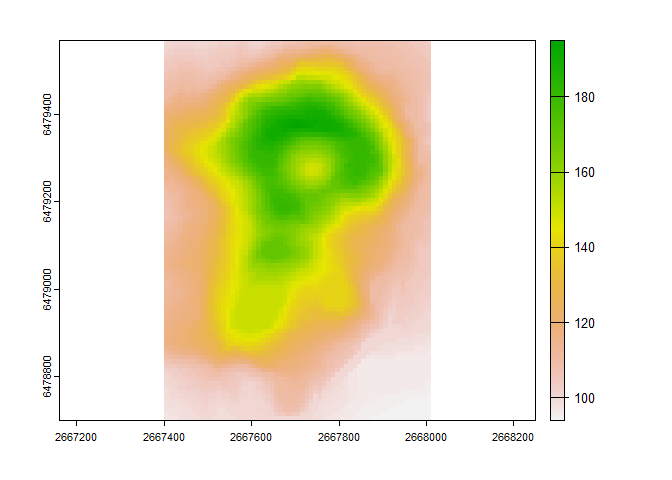
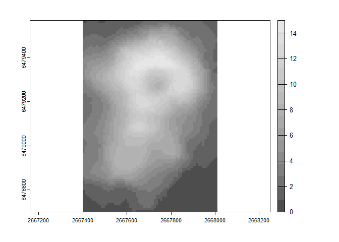
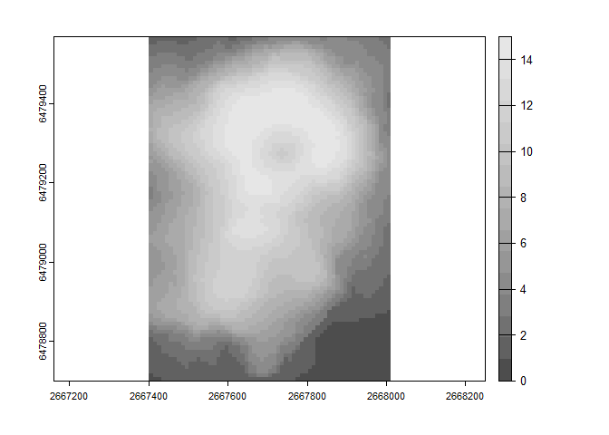
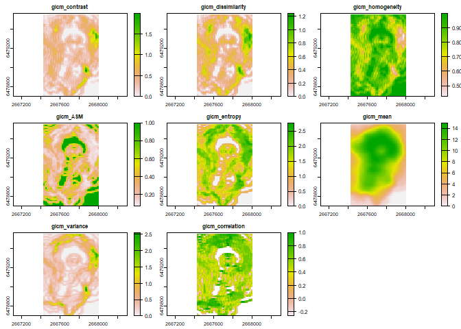
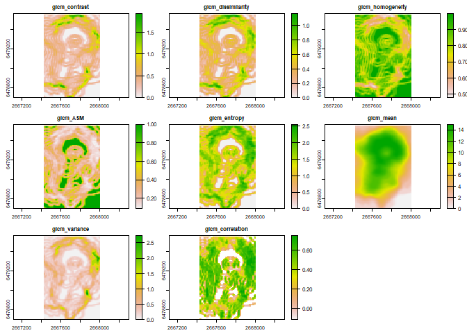

Alexander Ilich January 30, 2023
Ilich, Alexander R. 2020. “GLCMTextures.”, https://doi.org/10.5281/zenodo.4310186. https://github.com/ailich/GLCMTextures.
GLCMTextures
Purpose
This R package calculates the most common gray-level co-occurrence matrix (GLCM) texture metrics used for spatial analysis (Hall-Beyer 2017). It interfaces with C++ via the Rcpp and RcppArmadillo packages for increased speed.
Texture metrics are calculated using a symmetric gray level co-occurence matrix (GLCM), meaning that each pixel is counted as a focal and neighboring pixel. For more details on how a symmetric GLCM is constructed, I highly recommend checking out Dr. Mryka Hall-Beyer’s GLCM texture tutorial.
Motivation
When comparing results across different software that calculate GLCM texture metrics, there are inconsistencies among results. This package is meant to provide a clearly documented implementation of GLCM texture metrics that gives the user control over key parameters to make it clear to the user exactly what they are calculating. As such, the formulas for each texture metric are provided, different shifts can be specified, the user can decide how to handle NA values, and the user gets control over how and if the data should be quantized.
Install and Load Package
The package can be installed from CRAN using install.packages("GLCMTextures") or the development version can be installed from github using the code remotes::install_github("ailich/GLCMTextures"). If you are using Windows, you may need to install Rtools using the instructions found here). To install from github you must already have the remotes package installed, which can be installed using install.packages("remotes")
This package relies on the terra package for handling of spatial raster data.
Specifying the Relationship Between Focal and Neighbor Pixels
The convention for specifying the direction of the neighboring pixel (the shift) is shown in the image below. The blue pixel in the center is treated as the focal pixel in the example. Shifts are specified as c(x_shift, y_shift). So, a shift of c(1,0) refers to a the neighboring pixel being 1 to the right and 0 upwards of the focal pixel. Since a symmetric GLCM is created, this means each pixel is counted as both a focal and a neighboring pixel, so it also tabulates the shift in the opposite direction c(-1,0), which is the dotted blue line. Therefore, these two shifts will produce equivalent results. Although neighboring pixels are typically considered as those one away in a given direction, the shift value can be specified as any integer value.
GLCM Shift
Available Metrics
There are 8 metrics than can be calculated by this package. These metrics can be divided into 3 groups: the contrast group, the orderliness group, and the descriptive statistics group (Hall-Beyer 2017). The formulas provided below are from Hall-Beyer (2017).
N = Number of rows or columns in the GLCM (Equal to the number of gray levels)
i = row indices of the GLCM matrix (equal to gray level of reference cell)
j = column indices of the GLCM matrix (equal to gray level of neighboring cell)
Pi,j = Probability (relative frequency) of neighboring cells having gray levels i & j
Contrast Group
$$\text{GLCM Contrast} = \sum_{i,j=0}^{N-1} {P_{i,j}(i-j)^2}$$
$$\text{GLCM Dissimilarity} = \sum_{i,j=0}^{N-1} {P_{i,j}|i-j|}$$
$$\text{GLCM Homogeneity} = \sum_{i,j=0}^{N-1} \frac{P_{i,j}}{1+(i-j)^2}$$
Tutorial
Load packages
library(GLCMTextures) #Load GLCMTextures packageSee package help page
help(package="GLCMTextures")Test Matrix
Before conducting texture calculations on entire raster data sets, we will work with a small matrix.
test_matrix<- matrix(data=c(2,0,1,3,0,0,0,3,2), nrow = 3, ncol=3)
print(test_matrix)
#> [,1] [,2] [,3]
#> [1,] 2 3 0
#> [2,] 0 0 3
#> [3,] 1 0 2This test matrix has 3 rows and 3 columns and contains values from 0-3 (4 gray levels).
We can use themake_glcm function to create a normalized symmetric GLCM.
A GLCM is a tabulation of counts and has the dimensions of the number of gray levels. The GLCM is initialized with all zeros and then we add as we tabulate counts.
Initialzed GLCM
#> [,1] [,2] [,3] [,4]
#> [1,] 0 0 0 0
#> [2,] 0 0 0 0
#> [3,] 0 0 0 0
#> [4,] 0 0 0 0The row and column number refers to the gray value of the focal and neighboring pixel (Since gray levels start at a value of 0, the row/column number is 1 larger than the corresponding gray level).We will use a shift of c(1,0) meaning that the neighboring pixels is the pixel directly to the right of the focal pixel. We start in the top left corner and we can see that we have a 2 as the focal value and a 3 as the neighboring value directly to the right, so we add 1 to the corresponding position in the GLCM which is row 3 (2+1)/column 4(3+1). Since we would like to create a symmetric GLCM where each pixel is treated as both a focal and neighbor value, we also add to row 4/column 3.
#> [,1] [,2] [,3] [,4]
#> [1,] 0 0 0 0
#> [2,] 0 0 0 0
#> [3,] 0 0 0 1
#> [4,] 0 0 1 0We then continue this process throughout the whole image, moving right to the next focal pixel, and down to start the next row when a given row is completed. The resulting GLCM is a square matrix of counts that is symmetric about the diagonal.
horizontal_glcm<- make_glcm(test_matrix, n_levels = 4, shift = c(1,0), normalize = FALSE)
horizontal_glcm
#> [,1] [,2] [,3] [,4]
#> [1,] 2 1 1 2
#> [2,] 1 0 0 0
#> [3,] 1 0 0 1
#> [4,] 2 0 1 0Once we have finished tabulating all the counts we “normailize” the GLCM by dividing the each element by the sum of all the counts to get relative frequencies or probabilities that a given pixel of value i occurs next to a pixel of value j. The values in a normalized GLCM will therefore sum to 1.
horizontal_glcm<- horizontal_glcm/sum(horizontal_glcm)
horizontal_glcm
#> [,1] [,2] [,3] [,4]
#> [1,] 0.16666667 0.08333333 0.08333333 0.16666667
#> [2,] 0.08333333 0.00000000 0.00000000 0.00000000
#> [3,] 0.08333333 0.00000000 0.00000000 0.08333333
#> [4,] 0.16666667 0.00000000 0.08333333 0.00000000This could be accomplished in one line of code by setting the argument normalize=TRUE which is the default.
make_glcm(test_matrix, n_levels = 4, shift = c(1,0), normalize = TRUE)
#> [,1] [,2] [,3] [,4]
#> [1,] 0.16666667 0.08333333 0.08333333 0.16666667
#> [2,] 0.08333333 0.00000000 0.00000000 0.00000000
#> [3,] 0.08333333 0.00000000 0.00000000 0.08333333
#> [4,] 0.16666667 0.00000000 0.08333333 0.00000000You may have noticed that pixels in the last column of the test matrix did not have a neighboring pixel to the right, so you would not tabulate any counts in those cases; however, this is precisely why we tabulate a symmetrical GLCM as these pixels do have neighbors to the left. Also, note that although the original matrix was 3x3, the GLCM is 4x4 because the size of the GLCM corresponds to the number of gray levels, not the size of the input matrix.
Once the GLCM has been constructed, we can use this to calculate texture metrics using theglcm_metrics function to calculate the GLCM texture metrics
glcm_metrics(horizontal_glcm)
#> glcm_contrast glcm_dissimilarity glcm_homogeneity glcm_ASM
#> 4.000000 1.666667 0.400000 0.125000
#> glcm_entropy glcm_mean glcm_variance glcm_correlation
#> 2.138333 1.166667 1.638889 -0.220339Raster Data
Now we can move from calculating a single value of a given texture metric to calculating raster surfaces of texture metrics.
r<- rast(volcano, extent= ext(2667400, 2667400 + ncol(volcano)*10, 6478700, 6478700 + nrow(volcano)*10), crs = "EPSG:27200") #Use preloaded volcano dataset as a raster
plot(r) #plot values
Raster Quantization
Our test image had integer values that range from 0 to 3. Raster data often represent continuous data that cover a potentially large range and may not be confined to integer values greater than or equal to zero. The first step is therefore to quantize the raster image to a discrete number of gray levels. This can be done using thequantize_raster function. Typically data are quantized to 16 (4 bit; 24) or 32 (5 bit; 25) gray levels. With increasing number of gray levels, the computation cost increases.
There are two methods of quantization available in the quantize_raster function. The first way, method = "equal range", will create bins that cover a range of equal size (e.g. if the original data ranged from 0-20 and was quantized to 4 levels, [0-5) would be reassigned to 0, [5-10) would be reassigned to 1, [10-15) would be reassigned to 2, and [15-20] would be reassigned to 4). This is the simplest and most common quantization method. By default the raster is scaled using the min and max of the data set, but a max and min value can be supplied to the max_val and min_val parameters. This may be more desirable if making comparisons across several different rasters where you need the gray levels to correspond in a consistent way to the original data, as you can supply the global max/min or the theoretical max/min values that could occur.
rq_equalrange<- quantize_raster(r = r, n_levels = 16, method = "equal range")
plot(rq_equalrange, col=grey.colors(16))
#> [1] "Min Val = 0"
#> [1] "Max Val = 15"The second way to perform quantization is method = "equal prob" which performs equal probability quantization and will use quantiles (Hyndman and Fan 1996) to create bins that contain an approximately equal number of samples. This is the quantization method suggested in the original paper (Haralick and Shanmugam 1973).
rq_equalprob<- quantize_raster(r = r, n_levels = 16, method = "equal prob")
plot(rq_equalprob, col=grey.colors(16))
#> [1] "Min Val = 0"
#> [1] "Max Val = 15"Since we used equal probability quantization, each value has approximately the same count
Calculate Texture Metrics Raster Surfaces
For raster data sets, rather than calculating a single value of the texture for the entire image, we create a surface that represents the texture in a given neighborhood around each pixel. To do this we calculate texture metrics using a rectangular sliding window of a given size. We start at the top left pixel and treat that as the central pixel, and specify a window of given dimensions. We then extract a window of that size around the central pixel (note: window size must be odd). This extracted window is then run through the process shown before for test_matrix, and the resulting value of a texture metric is assigned as the value for the position corresponding with the central pixel. To do this, we can use theglcm_textures function.
For example, below we calculate textures using a window size of 3 rows by 5 columns
textures1<- glcm_textures(rq_equalprob, w = c(3,5), n_levels = 16, quantization = "none", shift = c(1,0))
plot(textures1)
You may have noticed in the example above that quantization = "none". This is because we supplied a raster that was already quantized.
We could instead call the original raster and have it quantized within the glcm_textures function.
textures2<- glcm_textures(r, w = c(3,5), n_levels = 16, quantization = "equal prob", shift=c(1,0))
all.equal(values(textures1), values(textures2))
#> [1] TRUEWe can also calculate the value of textures across multiple shifts by supplying a list. In fact, the default is to return directionally/rotationally invariant textures that are averaged across all 4 directions shift = list(c(1, 0), c(1, 1), c(0, 1), c(-1, 1)).
textures3<- glcm_textures(r, w = c(3,5), n_levels = 16, quantization = "equal prob", shift = list(c(1, 0), c(1, 1), c(0, 1), c(-1, 1)))
plot(textures3)
Some Other Options
By default all calculated texture metrics are returned; however you can have only a subset returned by specifying which ones you want using the metrics argument.
You can also use na.rm to specify how you want to handle NA values.
References
Hall-Beyer, Mryka. 2017. “GLCM Texture Tutorial v3.0.
Haralick, Robert M, Karthikeyan Shanmugam, and Its’Hak Dinstein. 1973. “Textural features for image classification.” IEEE Transactions on systems, man, and cybernetics (6):610-621.
Hyndman, Rob J, and Yanan Fan. 1996. “Sample quantiles in statistical packages.” The American Statistician 50 (4):361-365.